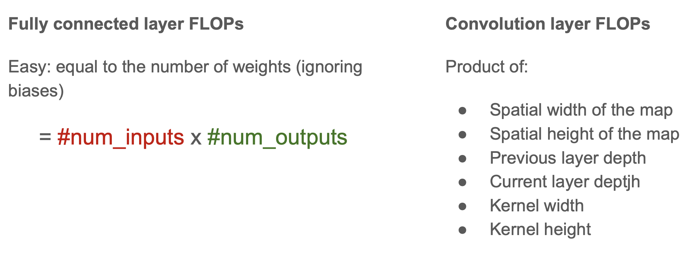

utils¶
GPU¶
某某神经网络参数量有多少，大概占用多大的显存
Mini-batch sizes and gradient splitting trick
Estimating neural network computation (FLOP/s)
Calculating effective aperture sizes

{kind=link}
Model size¶
CNN
per sample
{kind=link}
一个 filter 的深度(通道数)要和 input 的深度(通道数)一样
optimization¶

GPU momory size:
GTX 980: 4GB
Tesla K40: 12GB
Tesla K20: 5GB
Estimating computational complexity:
FLOPS | flop/s, Floating point operations per second 衡量运算时计算性能，在使用浮点数科学运算时很有用。
在 deep NN 里的计算都被 FC & conv layers 里的 加乘 multiply-adds 主宰，所以我们在估算计算复杂度的时候，可以直接 estimate the number of FLOPs (multiply-adds) in the forward pass。而忽略掉 非线性的操作、dropout、normalization layers…
{kind=link}
{kind=link}
Refernce:
[Memory usage and computational considerations]
[CNN 模型所需的计算力flops是什么？怎么计算？]
[Memory usage and computational considerations]:https://imatge-upc.github.io/telecombcn-2016-dlcv/slides/D2L1-memory.pdf [CNN 模型所需的计算力flops是什么？怎么计算？]:https://zhuanlan.zhihu.com/p/137719986
tensorboard¶
[pytorch：本地使用tensorboard可视化](https://blog.csdn.net/Caesar6666/article/details/127245418)